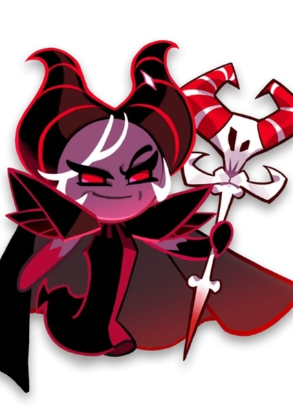

La Bruja es una figura muy poderosa dentro del universo de Cookie Run: Kingdom. Es una galleta incorporada recientemente y perteneciente a la categoría "bruja". Pertenece al meta del juego.
Galleta de tipo magia y caos, equipar con tartaleta de ataque, tres aderezzos de ataque y dos de recarga (a poder ser de los usyos propios) y beascuit full ignorancia al daño o full daño tipo caos.
Volver al inicio